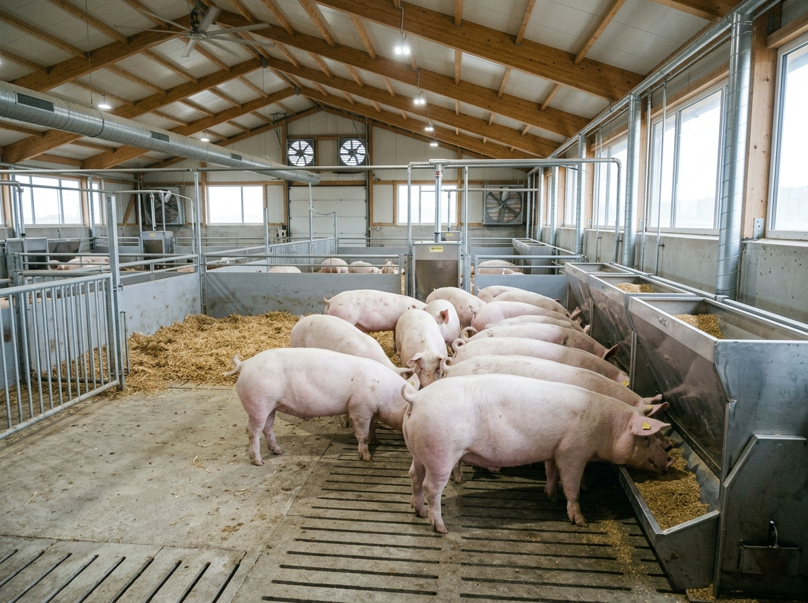
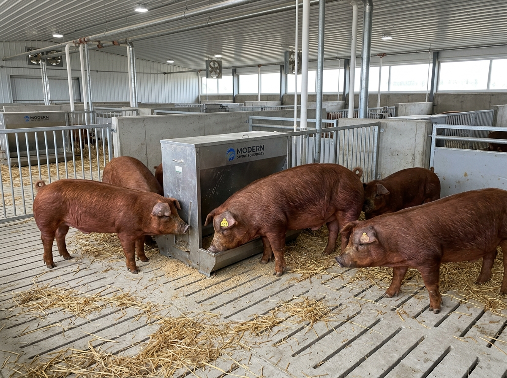

DisponibleLote 001 - Landrace Select
Grupo uniforme de porcinos en etapa de crecimiento, seleccionados bajo estrictas pruebas de conversión alimenticia y conformación sanitaria.
- Raza Principal: Landrace Pureza
- Cantidad: 50 Porcinos
- Peso Promedio: 85 kg / animal
- Edad: 16 Semanas
- Estado Sanitario: Plan 100% Completo

DisponibleLote 002 - Duroc Master
Animales con excelente carga genética de resistencia y desarrollo muscular, en fase final para mercadeo de alta calidad cárnica.
- Raza Principal: Duroc F1
- Cantidad: 40 Porcinos
- Peso Promedio: 98 kg / animal
- Edad: 20 Semanas
- Infiltración: Marmoleo Superior
 En Reserva
En Reserva
Lote 003 - Pietrain Pro
Lote especializado en producción de carne magra de bajo porcentaje graso y máximo aprovechamiento industrial de corte noble.
- Raza Principal: Pietrain Especial
- Cantidad: 35 Porcinos
- Peso Promedio: 90 kg / animal
- Edad: 18 Semanas
- Magrez Estimada: >67%
 Próxima Entrega
Próxima Entrega
Lote 004 - Yorkshire Vigor
Camadas recién destetadas de gran fortaleza inmunológica, criadas bajo ambiente termorregulado y listas para arranque de cebadero.
- Raza Principal: Yorkshire / Large White
- Cantidad: 60 Lechones
- Peso Promedio: 18 kg / lechón
- Edad: 6 Semanas (Destetados)
- Vacunación: Micoplasma + PCV2